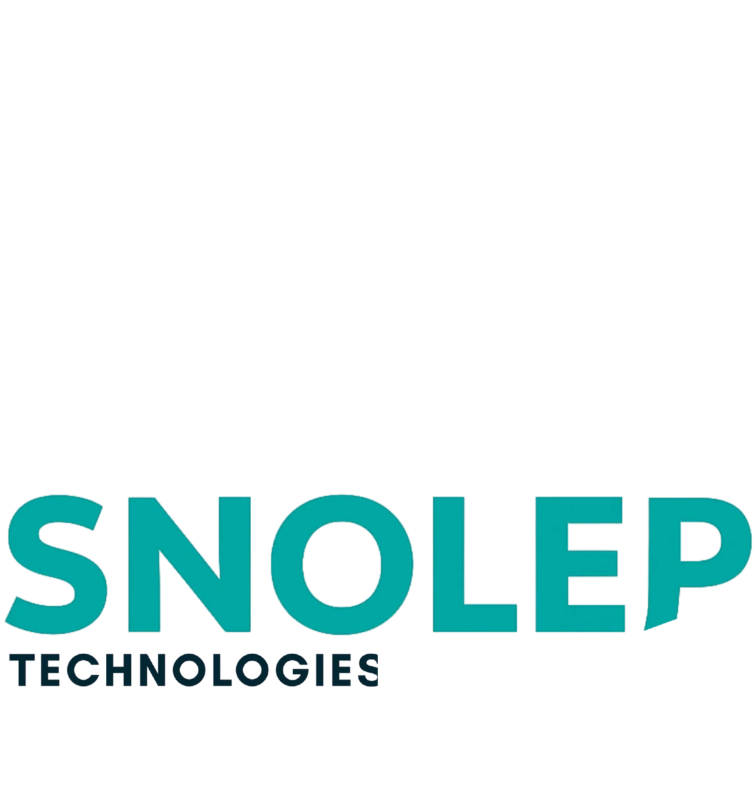
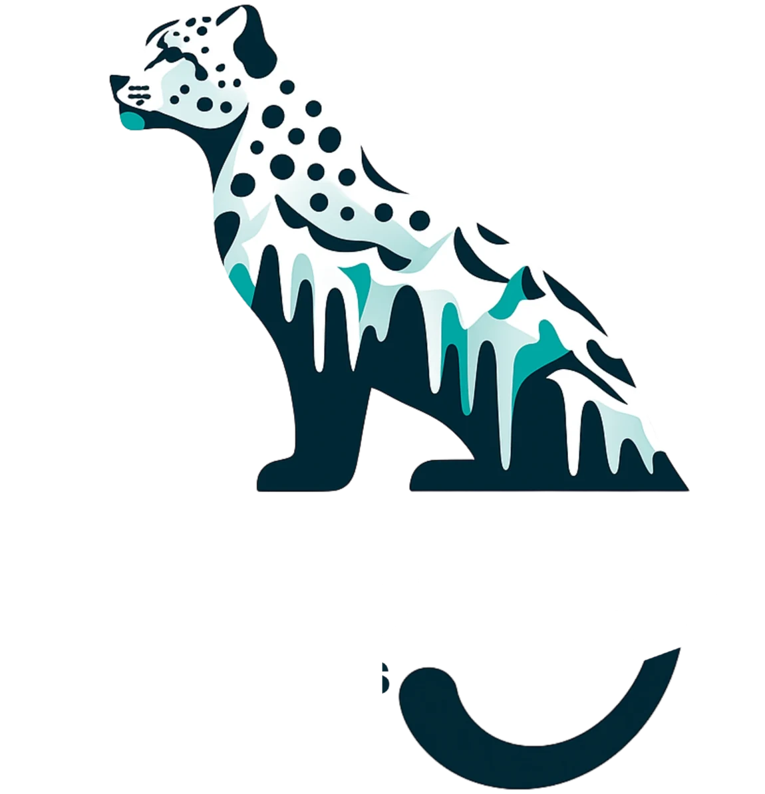

Project image
Project one ↗
A short line on what we built, for whom, and what changed because of it.


Nothing wasted. Every screen, every line of code earns its place.
We read the ground before we move, so we only have to move once.
One leap, landed. Measured twice, shipped once.
Built for thin air and hard ground. Systems that keep running at altitude.
A short line on what we built, for whom, and what changed because of it.
A short line on what we built, for whom, and what changed because of it.
A short line on what we built, for whom, and what changed because of it.
Tell us where you're headed. We'll read the ground, plan the jump and land it with you.
Work